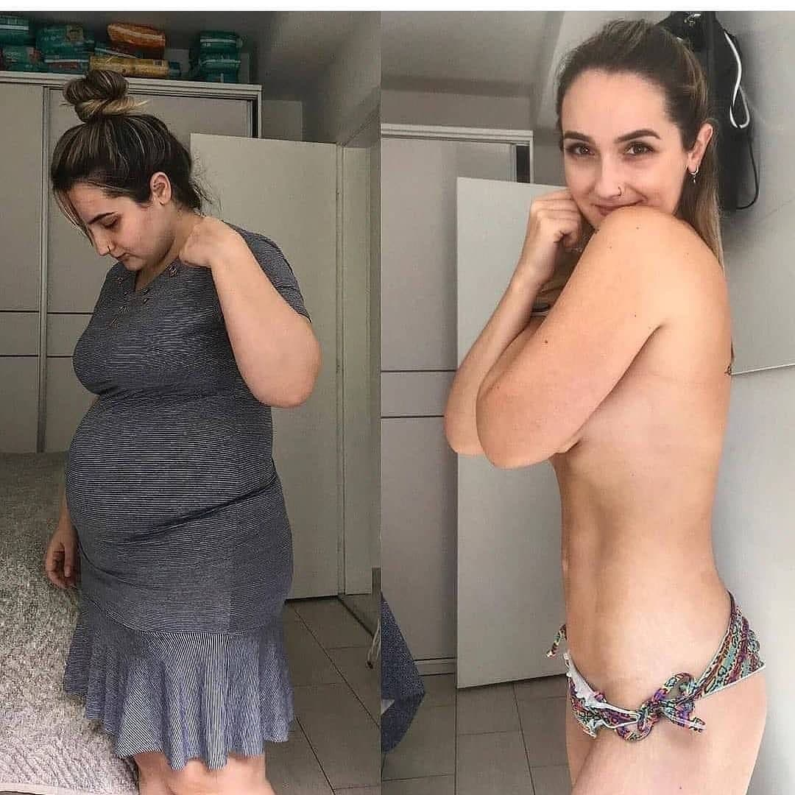

¿QUIERES PERDER 26 KG? ¡ES MUY FÁCIL!
Los secretos para perder peso de Adamari López
HE PERDIDO PESO YO MISMA Y TE AYUDARÉ A PERDER PESO
¡Hola a todos!Lo siento, pero simplemente no tuve tiempo de responder todas vuestras preguntas.Si nos ponemos a pensar, es el mismo tema: cómo perder peso de una vez y para siempre. ¡Y por supuesto sin dañar la salud!Así que decidí escribir sobre todo en este post y contar cómo perdí 26 kilos.

ESTAS FOTOS FUERON TOMADAS HACE 2 MESES, INCREÍBLE ¿NO ES ASÍ?
Nunca he sido una mujer débil, pero mi cuerpo se volvió loco y tenía gorditos en todas partes: tenía un bocio que colgaba del pecho como un pavo, tenía grasa y celulitis en todas partes, en el estómago, en las piernas e incluso en los brazos. Después de darme cuenta de eso boté todas las camisetas sin mangas.
Estaba cansada de llorar frente al espejo hasta que pude ponerme en pie de nuevo. ¡Más precisamente para recuperar mi cuerpo gordo! Probé de todo y al mismo tiempo, probablemente como todas las otras chicas ingenuas como yo. Me puse a dieta y comencé a hacer ejercicio. Me despertaba al amanecer, comía un huevo crudo (¡nunca lo hagáis!) E iba a rastras a la calle, apenas movía los pies. Dejé los alimentos fritos, me inscribí en el gimnasio, compré té para bajar de peso y llené el refrigerador con yogur. Tenía todo el paquete, por así decirlo. ¿Creéis que logré algo?
¡Al contrario! Aumenté aún más de peso, de repente subí otros 5 kg en estas semanas que practiqué deporte intensamente. ¡En total llegué a 89 kg! ¡Con un poco más de 1,60 cm de estatura!Más tarde, los médicos me explicaron que el cuerpo estaba bajo estrés, por lo que comenzó a acumular intensamente 'suministros' Mi organismo creía que quería destruirlo. Olvidé el sabor del pan, olvidé qué es la carne, olvidé cómo se derrite el helado en mi boca. Comía solo manzanas y bebía solo agua, pero en todo vano.
En resumen, durante meses probé diferentes métodos para perder peso hasta que un día me volví loca.

Me avergüenza hablar de esto, pero un día decidí que estaba destinada a morir como una anciana gorda rodeada de 7 gatos. Fui directamente a McDonald's, compré la mitad del menú y me detuve media hora después. Después lloré durante horas, sentí que no podía ser peor.
En ese momento sucedió un milagro. No en el water de McDonald's, sino luego de dos semanas, pero sigue siendo un milagro. Vi en youtube un blog de una español que contaba cómo soñaba con deshacerse de la maldición en su familia, todos ellos eran gordos. Biolica la ayudó a lograrlo.Yo también pedí el Biolica .Luego leí mucha información sobre este producto en internet. Resultó que muchas estrellas de Hollywood perdieron peso con su ayuda. No creía en una transformación milagrosa, ya que había probado casi todas las dietas y programas existentes, y ninguno de estos me ayudó, así que dudaba de todo eso Biolica me ayudará. Bueno, ¡no debería haber dudado!
El paquete llegó rápidamente, en menos de una semana. Durante este tiempo, leí muchas reseñas e información sobre Biolica y me convencí de que era la mejor opción. Seguí las instrucciones, bebí el Biolica dos veces al día, por la mañana y por la noche.
Ahora ten cuidado. Mejor siéntate.
¡En 2 semanas perdí 13 kg! ¡En 2 semanas perdí 13 kg! Eso significa que estaba perdiendo alrededor de una libra por día, ¿puedes creerlo?!
MILLONES DE MUJERES EN EUROPA Y ESTADOS UNIDOS BAJARON LOS KILOS DE MÁS CON Biolica. SEGÚN LAS ESTADÍSTICAS, EL 96,7% LOGRÓ RESULTADOS IMPRESIONANTES : ¡CADA UNO PERDIÓ 8-11,5 KG EN 23 DÍAS!

LA COMBINACIÓN ÚNICA DE SUS COMPONENTES HACE QUE EL PROCESO DE PÉRDIDA DE PESO SEA SIMPLE Y REAL: ¡LOS RESULTADOS SON IMPRESIONANTES!
Mis nalgas se han vuelto más delgadas por casi 10 cm, el estómagosimplemente desapareció - no lo creía. Mi piel, cabello: todo se volvió brillante y saludable, las espinillas en la espalda y el pecho desaparecieron desde el principio. Comencé a creer que realmente podía pasar de ser una mujer gorda a una princesa real: ¡la balanza y el espejo no mienten! Y créanme, no seguía ninguna dieta, el éxito de mi pérdida de peso lo logré únicamente con la ayuda de Biolica.

Y la tercera semana fue un éxito: perdí 6 kg de peso.
Y lo más sorprendente fue que no tenía que hacer nada, solo bebía Biolica todo según las instrucciones y trataba de recordar tomar la dosis recomendada. Incluso la persona más perezosa puede hacerlo.
En 3 semanas perdí 10 kg. Sin esfuerzo, sin restricciones dietéticas o ejercicio extenuante. Mi panza gorda, mis brazos llenos de celulitis y mi bocio se fueron para siempre. Casi lloro de felicidad mientras escribo esto :)
Después de una dieta completa con Biolica, es decir, después de 2 meses, perdió 26 kg. No sabemos cuántos milagros puede lograr el cuerpo humano si se le ayuda.Ya no tengo 20 años, una edad en la que los kilos se acumulan y se pueden perder rápidamente.
MILES DE PERSONAS AÚN NO PUEDEN CREER LO QUE ESTÁN VIENDO AHORA:

POR CIERTO, Biolica FUE PROBADO POR LA ACADEMIA NACIONAL DE CIENCIAS EN 2021 . LOS RESULTADOS HABRÍAN TENIDO UN EFECTO BOMBA, POR LO QUE NO LOS HICIERON PÚBLICOS.
¿POR QUÉ? ¡PORQUE EL PRODUCTO QUE REALMENTE FUNCIONA QUEBRARÍA A LAS COMPAÑÍAS FARMACÉUTICAS, LOS MÉDICOS, LOS NUTRICIONISTAS Y LAS CLÍNICAS PRIVADAS!Y ESPECIALMENTE UN PRODUCTO BARATO.
Ahora les cuento a todos mis amigos y colegas sobre Biolica, porque creo que todos deberían saberlo.Ser delgado y enérgico es tan bueno, y quiero que todos a mi alrededor entiendan cuánta felicidad puede traer este producto. Al realizar el pedido, compré solo en el sitio web oficial del producto. Dejemos de matarnos del hambre, cansarnos en el gimnasio, somos inteligentes cuando sabemos qué hacer.

¿TODAVÍA SUEÑAS CON UN CUERPO DELGADO? ¡ES HORA DE ACTUAR!¡DESHAGÁMONOS DE LA GRASA HORRIBLE DE INMEDIATO!
Responderé a las preguntas más populares:
¿Aparecen las estrías después de perder peso rápidamente? No, Biolica ¡no deja estrías!La pérdida de peso, aunque es bastante significativa, pero el proceso es gradual, por lo que la piel tiene tiempo suficiente para adaptarse a los cambios y mantener su tono.
¡Qué pasa con la piel!¿Se endurece? ¡No!Simplemente vuelve a la normalidad. Biolica activa la producción de colágeno que permite que la piel sea flexible y tonificada. ¡No quedan marcas de estrías o celulitis, creedme!
¿Qué dieta debo seguir? Estoy en contra de todas las dietas porque no tenemos que torturar a nuestro cuerpo.
¿Es cierto que después de 18 horas no se puede comer? ¡Es un mito! ¡Debes comer cada vez que tengas hambre! Por supuesto, es mejor comer porciones pequeñas en unas pocas horas, y todo estará bien.
TENGO NOTICIAS EXCELENTES. ME PUSE EN CONTACTO CON LOS REPRESENTANTES DE Biolica Y OFRECIERON UN DESCUENTO DEL 50% A LOS PRIMEROS 100 VISITANTES DE MI BLOG QUE PONGAN SU ORDEN.

COMENTARIOS
26.11.2021
Cristina Mendoza
¡Querida Adamari, estoy muy agradecida por su recomendación! He leído mucho sobre Biolica pero tenía miedo y no pensé que funcionaría. Solo lo pedí después de leer su publicación.Han pasado nueve semanas desde que terminé la dieta completa con Biolica. ¡Perdí 21 kg!¡GRACIAS!
26.11.2021
Carolina Martín
Desde peque soñaba con un cuerpo delgado. Me enteré sobre Biolica hace tres meses. Dudaba en pedirlo, pero mi madre me convenció. ¡No es realmente costoso hacer realidad tu sueño! Ahora ambas estamos perdiendo peso. Ella también pudo perder peso más que yo, pero los resultados siguen siendo increíbles.
26.11.2021
María Flores
¡Estoy tan contenta de haberme topado con tu publicación!Definitivamente probaré también Biolica .
27.11.2021
Ramona Márquez
¡Hola, Adamari! Yo ya probé Biolica, yahorapuedo decirte que salvaste a mi familia y mi matrimonio:) mi esposo comenzó a ver a una mujer en mí otra vez, me hace confiar en mí misma.Me siento ahora mejor, ¡gracias! :)
27.11.2021
Mariela Benítez
Cariño, Adamari, tienes un blog maravilloso y todo lo que recomiendas realmente funciona. También probé docenas de dietas y programas de pérdida de peso, pero los resultados siempre estuvieron por debajo de mis expectativas. Peso 85 kg y mi estatura es 1.63 cm. Ordené Biolica justo después de leer tu publicación. Espero que esto me ayude a perder 26 kg.Prometo que te comentaré mis resultados.
27.11.2021
Adamari López
¡Hola, Mariela! No solo perdí peso con la ayuda de Biolica , adelgazarontambién mis otros amigos, así que tenga la seguridad de que tendrá éxito.Es muy importante para mí compartir los resultados con vosotros para saber qué piensan los demás.Sinceramente espero tener éxito!
27.11.2021
Ana Barco
Recibí el paquete ayer. Estoy muy emocionada, no puedo esperar los primeros resultados.
28.11.2021
Roxana Pérez
¡Cariño, Adamari! ¡Gracias! Bajé mis kilos de más tan rápido y sin mucho esfuerzo.¡Es un verdadero milagro, gracias por contarnos todo sobre este producto!
28.11.2021
Juliana Miranda
Siempre supe que la tecnología moderna no fallaría y que se encontraría una solución al problema de la obesidad :) Mañana tengo una reunión en un restaurante, por primera vez en muchos años.Hasta hace poco yo era como un mismo restaurante: llena de grasa y olor a carne frita:) Con la ayuda de Biolica perdí 23 kg en 2 meses. ¡Gracias, Adamari!
28.11.2021
Andrea Díaz
¡Guau, muchacha!Adamari, ¿has tenido un resultado tan impresionante en un mes??? ¡Creo que también lo voy a pedir! Ayer me paré en la balanza, mi situación no es tan optimista :(
28.11.2021
Alexandra Sánchez
¡Adamari, recibe de mi parte mis más inmensos agradecimientos!
29.11.2021
Gina Rodríguez
Finalmente ordené Biolica .¡Gracias, Adamari! Como prometí, ¡comparto los resultados!
29.11.2021
Teo Torrente
Jesús, eso es realmente impresionante. Mi amigo perdió 16 kg con Biolica en 1,5 meses. ¡ni siquiera su madre lo reconoció!
29.11.2021
Marta Cáceres
Gracias por el apoyo.Tengo un nuevo peso, una nueva vida , todo es verdad.He perdido solo 5 kg, pero constantemente pierdo peso, así que estoy feliz.
29.11.2021
Sofía Valverde
Tres de mis amigos perdieron peso con Biolica y el resto ya no los reconocían porque antes siempre eran gorditos y ahora parecen maniquíes. También pedí este remedio, porque no quiero ser el menos atractivo del grupo.
30.11.2021
Elena
Adamari, como pediste, escribo sobre mis resultados. !!! ¡Estoy tan feliz que ni siquiera te imaginas!
30.11.2021
Adamari López
Hola Elena, estoy muy feliz por ti